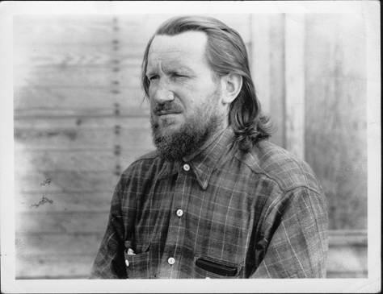

In 1939, James Glenn Dyer sailed south with Admiral Byrd and wintered on a small island in Marguerite Bay. Eighty-some years later, his daughter is 85. This page is how we get her there, and the gentler ways to simply stand on Antarctica together.
Surveyor, cartographer, and navigator. He didn't just visit Antarctica, he helped map a piece of it that still carries his name. Tap any moment to expand it.

There is one hard trade-off. The exact place he stood is the longest, roughest, priciest voyage, and even then a landing is never guaranteed. The gentlest trips can't reach it at all. Pick a path to light its route on the map and see its options.
| Option | Days | Gateway | Drake | Reaches East Base? | From / person |
|---|---|---|---|---|---|
| 🚢 Oceanwide Deep South (OTL27-27) | 25 | Ushuaia | by sea | Tries (not guaranteed) | $24,600+ |
| 🚢 Oceanwide Deep South Basecamp | ~13 | Ushuaia | by sea | Itinerary names it | $13,700+ · sold out |
| ✈️ Antarctica21 Polar Circle | 10 | Punta Arenas | flies | No (reaches ~66°S) | $24,995 |
| ✈️ Antarctica21 Classic | 8 | Punta Arenas | flies | No | ~$14–16k |
| ✈️ Lindblad Fly the Drake | 8–10 | Puerto Natales | flies | No | $12,400 |
Set how many of us travel. Totals use the lowest published per-person fare, so think of them as floors, not ceilings (the deep-south voyage in a private cabin will be considerably more).
Straight from Oceanwide's Polar Travel Advisor (June 2026), these are the operator's stated requirements for the deep-south voyages on m/v Ortelius. They apply to everyone, regardless of age. This is a checklist to weigh against, not a verdict on anyone.
His island, and the two gateways we'd fly into. Drag and zoom each. The big one is Marguerite Bay, the deep-south bay where his base sat.
All the rabbit holes in one place, his life, the places, the operators, the ships, and the gateways. Open anything in a new tab.